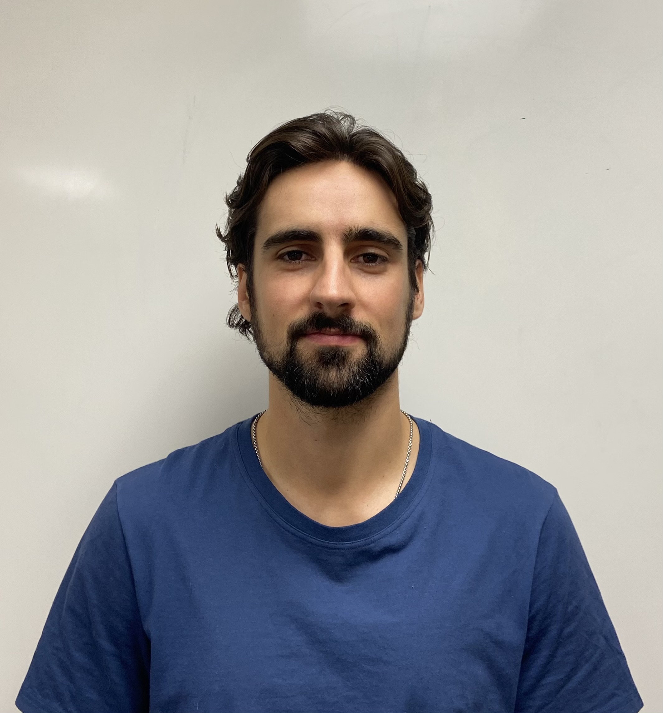

Alex Bercik
PhD Candidate
University of Toronto Institute for Aerospace Studies
alex [dot] bercik [at] mail.utoronto.ca
Welcome to my home page!
Group website: Computational Aerodynamics Lab
Supervisor website: Prof. David Zingg

I am a PhD candidate supervised by Prof. David Zingg in the Computational Aerodynamics Lab at the University of Toronto. My research focuses on the development of robust, efficient, and mathematically rigorous numerical methods for the solution of partial differential equations, with a focus on the hyperbolic problems arising from fluid dynamics. I work with entropy-stable summation-by-parts (SBP) methods, which by satisfying integration by parts at the discrete level, provide an algebraic framework for reproducing the various stability and conservation proofs of the continuous problem. Although the SBP umbrella covers quite a large range of numerical schemes (both mesh-based and mesh-free), I focus on finite-difference, discontinuous Galerkin, continuous Galerkin, and finite-volume methods. See my Research page for more details.
I expect to defend my PhD in November 2026.